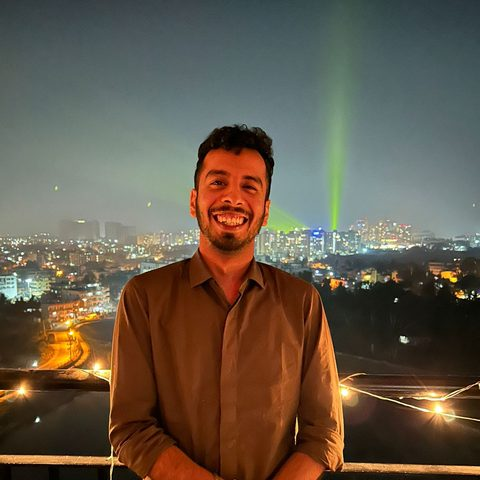
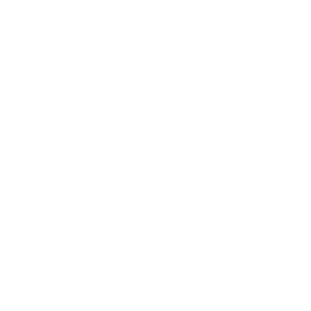
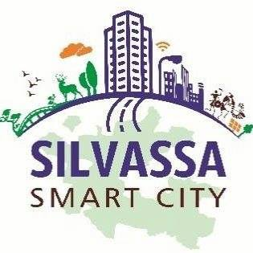
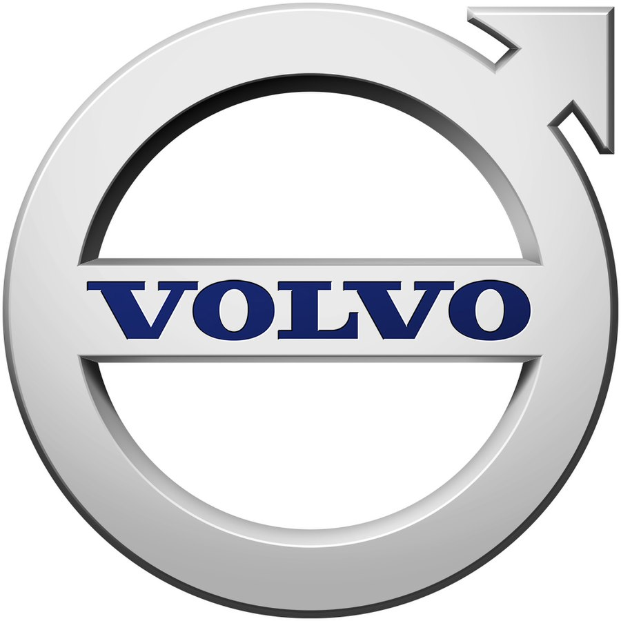

Fleet Electrification · Transit Planning · Transport Modelling · Data & GIS
I'm a transport planner working on how cities move people — and how their bus fleets go electric. I'm currently Senior Transport Planner at the Centre of Excellence in Urban Transport (CoEUT – CRDF), CEPT University, Ahmedabad, where I'm planning the deployment of 1,000+ electric buses across eight Gujarat cities under the PM e-Bus Sewa scheme and advising the State of Chhattisgarh on its roll-out.
Before this I led the Transportation vertical at Microgrid Labs for close to four years, delivering fleet transition plans and charge-management deployments for transit operators in India, the USA, Italy and the Philippines — including the 900-bus electrification strategy for Bengaluru's BMTC. I'm an Associate Member of the Institute of Town Planners, India, and a firm believer in public transport and accessible, sustainable mobility for all.

Where planning meets data meets electrification — built up across the roles below.

Charging & Depots CSMS, EMS & depot managementA route through the milestones — scroll to ride the line →
Service-level benchmarking of Surat's CityBus and BRTS operations. Led primary field surveys — counting passengers, timing headways, mapping route performance gaps — and compared operations against national standards. Delivered technical recommendations to Surat Municipal Corporation. First time turning raw transit data into policy-ready insight.
Travelled key intercity coach corridors to understand traveller behaviour and service quality. Designed and ran user-perception surveys across multiple Volvo operator routes, and analysed brand consistency, on-board experience and willingness-to-pay to inform Volvo's fleet and branding strategy in India.
First hands-on role in electric mobility. Ran day-to-day public transport operations for the Smart City programme while assessing route feasibility and charging needs for e-bus deployment — sizing the fleet for ridership, modelling depot charging schedules and recommending charging-station placement.
First full-time role, at one of India's largest engineering firms. Worked on the Urban Roads Improvement Plan for six district headquarters in Himachal Pradesh, demand and willingness-to-pay assessment for the rail, road and bridge components of Gujarat's Kalpasar Dam, and transport demand for the nodes of the Delhi–Nagpur Industrial Corridor.
Led the Transportation vertical for Microgrid Labs India and USA. Prepared fleet transition plans and validated EV system designs for BMTC (900 e-buses), Torino and Everett, WA; deployed charge, energy and depot management systems for 1,700+ e-buses and 150+ e-trucks across Green Cell, Tata Motors / SCML, Kerala SRTC and Transvolt; designed depots and terminals for Davao, Philippines; and led the team building the EVopt platform's CSMS, EMS and DMS products.
Planning the deployment of 1,000+ electric buses across eight cities in Gujarat under the Government of India's PM e-Bus Sewa scheme, and advising the State of Chhattisgarh on its own e-bus roll-out — fleet sizing, depot and charging planning, and operations design, working directly with the scheme and the cities.
Selected work across fleet electrification, charging systems and transport planning. Click a card for details.
PM e-Bus Sewa scheme · CoEUT – CRDF, CEPT University
2026 – PresentBangalore Metropolitan Transport Corporation · Microgrid Labs
IndiaGreen Cell · Tata Motors / SCML · Kerala SRTC · Transvolt
IndiaMicrogrid Labs
ItalyMicrogrid Labs
USADavao Public Transport Modernization Project · Microgrid Labs
PhilippinesMicrogrid Labs
Multi-tenant SaaSL&T Infrastructure Engineering
2021 – 2022L&T Infrastructure Engineering
Gujarat · 2021 – 2022L&T Infrastructure Engineering
2021 – 2022
Silvassa Smart City Ltd
2021
Volvo Buses India
2019Surat Sitilink Ltd
2017Open to conversations on fleet electrification, public transport operations and urban transport research.